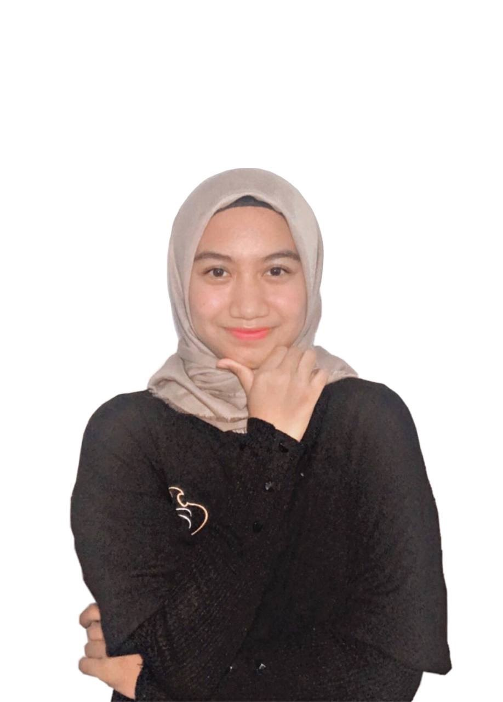

Selamat Datang di Portal Belajar!
- Fungsi Invers -
Pernahkah kamu membongkar sebuah mesin rakitan dan ingin mengembalikannya ke bentuk semula? Atau memakai sepatu dengan urutan kaus kaki lalu sepatu, dan saat melepasnya harus sepatu dulu baru kaus kaki? Itulah konsep dasar dari Invers (Kebalikan).
🎯 Mengapa Belajar Ini?
Fungsi invers sangat berguna di dunia nyata, seperti pada kriptografi (sandi rahasia), konversi suhu, kalkulasi resep kuliner penjelajah waktu, serta pemrograman komputer.
💡 Panduan Belajar
Gunakan menu navigasi di atas. Pelajari Peta Konsep dan Materi, lalu mainkan 5 mode game & kartu suhu interaktif yang tersedia di menu Simulator!
📋 Capaian & Tujuan Pembelajaran
Capaian Pembelajaran (CP)
Di akhir fase ini, peserta didik dapat memodelkan fenomena atau data dengan fungsi, serta menyelesaikan masalah yang berkaitan dengan fungsi invers.
Tujuan Pembelajaran (TP)
- Memahami konsep dan syarat sebuah fungsi memiliki invers.
- Menentukan rumus fungsi invers dari suatu fungsi linear dan pecahan.
- Menyelesaikan masalah kontekstual berkaitan dengan fungsi invers.
- Menggambarkan grafik fungsi invers berdasarkan grafik aslinya.
🗺️ Peta Konsep
Bagan grafik hierarkis ini memetakan alur materi Fungsi Invers secara visual, mulai dari konsep dasar hingga penerapan kontekstual di dunia nyata.
📚 Materi: Konsep Dasar Fungsi Invers
1. Apa itu Fungsi Invers?
Secara sederhana, fungsi invers adalah fungsi kebalikan. Jika fungsi f memetakan anggota himpunan A (Domain) ke himpunan B (Kodomain), maka fungsi inversnya (ditulis dengan simbol f⁻¹) akan memetakan anggota himpunan B kembali secara persis ke himpunan A.
Analogi di dunia nyata: Jika f(x) adalah proses "mengunci pintu dengan kunci", maka f⁻¹(x) adalah proses "membuka pintu dengan kunci yang sama".
2. Syarat Mutlak Sebuah Fungsi Memiliki Invers
Sangat penting untuk diingat bahwa tidak semua fungsi memiliki invers. Sebuah fungsi f(x) hanya akan memiliki invers (dapat dibalikkan secara sempurna) jika dan hanya jika fungsi tersebut adalah fungsi bijektif (korespondensi satu-satu).
Fungsi bijektif berarti setiap anggota A tepat berpasangan dengan satu anggota B, dan tidak ada anggota B yang jomblo ataupun bercabang. Cara termudah mengujinya secara visual adalah menggunakan Horizontal Line Test (Uji Garis Horizontal) pada grafiknya.
3. Langkah Menentukan Rumus Fungsi Invers Aljabar
- Ubah notasi fungsi f(x) menjadi variabel y. Persamaan menjadi y = f(x).
- Lakukan manipulasi aljabar (pindah ruas, kali silang, akar/quadrat) sedemikian rupa agar persamaan berubah bentuk menjadi x = ... (x sendirian di satu ruas).
- Setelah mendapat bentuk x = g(y), ubah variabel x menjadi notasi invers f⁻¹(x) dan ganti semua variabel y di ruas sebelahnya menjadi x.
⚡ Quick Check! Uji Pemahaman Kilat
Jika diketahui fungsi linear f(x) = 2x + 4, manakah di bawah ini yang merupakan rumus f⁻¹(x) yang benar?
Pilih Mode Simulator & Game Interaktif
Eksplorasi Simulator Grafik
Pilih jenis fungsi dan atur slider untuk melihat perubahan kurva serta rumus inversnya.
Bentuk Persamaan:
Visualisasi Grafik Simetris
🎮 Mini Game: Pasangkan Fungsi Invers
Tarik kotak fungsi f(x) ke kotak target fungsi inversnya f⁻¹(x) yang tepat!
🍳 Time Machine Chef: Resep Rahasia Suhu
Misi Kuliner Penjelajah Waktu: Oven ajaib membutuhkan suhu awal Celcius tertentu agar menghasilkan suhu resep Fahrenheit yang sempurna!
Suhu Resep Tujuan (°F):
Formula Oven: F = 95C + 32
Hitung berapa suhu awal Celcius (°C) yang harus diatur pada mesin waktu:
🌡️ Flashcard Kartu Soal Kontekstual Suhu
Pilih dan klik salah satu gambar kartu soal suhu di bawah ini untuk membuka dan menyelesaikan tantangan fungsi inversnya!
🃏 Kartu #1
Konversi Celcius ke Fahrenheit
🃏 Kartu #2
Target Suhu Laboratorium
🃏 Kartu #3
Suhu Reamur ke Celcius
🃏 Kartu #4
Mesin Pendingin Ruangan
🃏 Kartu #5
Suhu Termometer Skala Khusus
📝 Latihan Evaluasi
👩💻 Profil Pembuat
Platform pembelajaran interaktif Mathesis Labs - Fungsi Invers ini dikembangkan dengan dedikasi penuh untuk membantu proses belajar matematika kelas XI secara mandiri dan menyenangkan.

Putri Anjani
Mahasiswa Magister Pendidikan Matematika
Universitas Negeri Semarang
Anggun F. Anggraeni
Mahasiswa Magister Pendidikan Matematika
Universitas Negeri Semarang